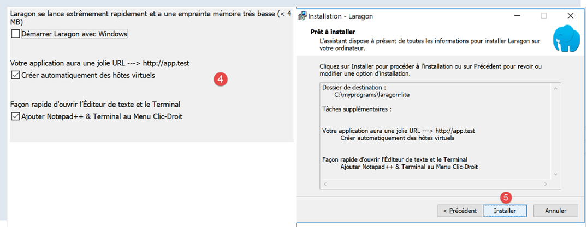
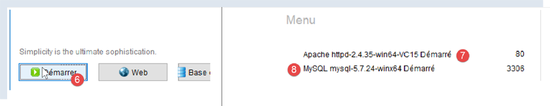
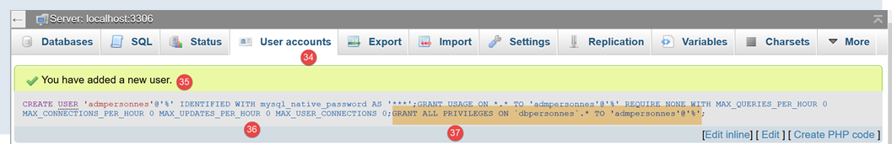
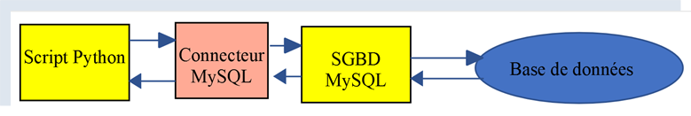
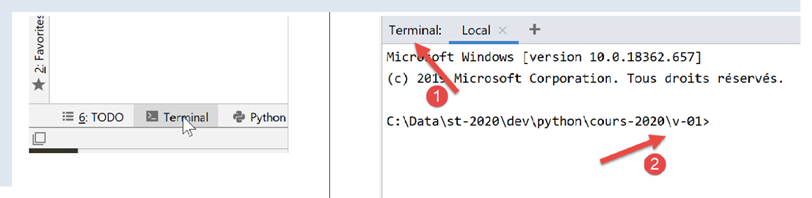
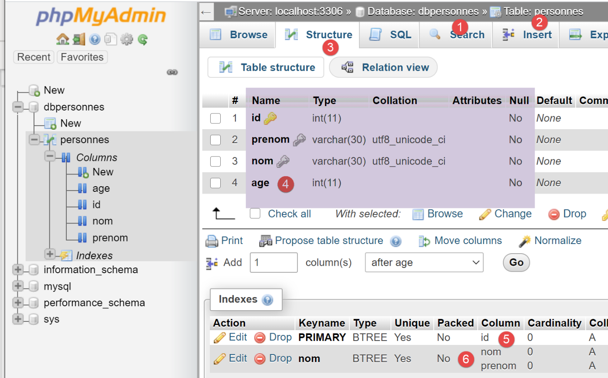
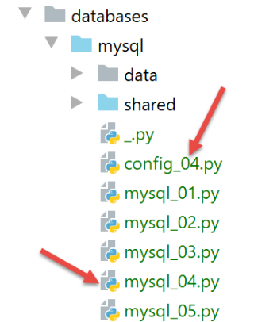
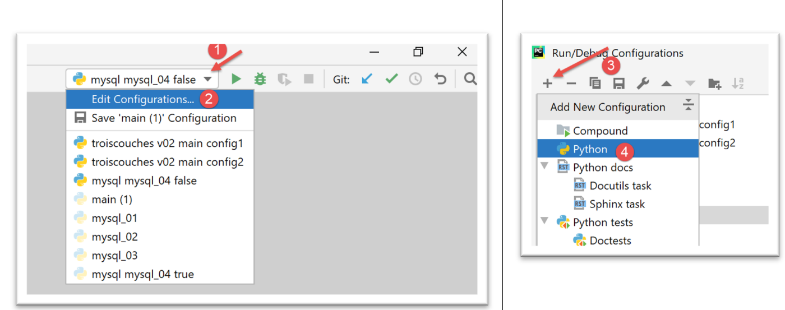

16. Utilizzo di SGBD MySQL

16.1. Installazione di SGBD e MySQL
Per poter disporre di SGBD e MySQL, installeremo il software Laragon.
16.1.1. Installazione di Laragon
Laragon è un pacchetto che riunisce diversi software:
- un server web Apache, che useremo per scrivere script web in Python;
- il SGBD MySQL;
- il linguaggio di scripting PHP, che non useremo;
- un server Redis che implementa una cache per le applicazioni web. Lo useremo;
Laragon può essere scaricato (febbraio 2020) al seguente indirizzo:


- L'installazione [1-5] genera la seguente struttura di directory:

- in [6] la cartella di installazione di PHP (non utilizzata in questo documento);
L'avvio di [Laragon] visualizza la seguente finestra:

- [1]: il menu principale di Laragon;
- [2]: il pulsante [Start All] avvia il server web Apache e il SGBD MySQL;
- [3]: il pulsante [WEB] visualizza la pagina web [http://localhost];
- [4]: il pulsante [Database] consente di gestire il SGBD e il MySQL con lo strumento [phpMyAdmin]. È necessario prima installarlo;
- [5]: il pulsante [Terminal] apre una finestra di comando;
- [6]: il pulsante [Root] apre Esplora risorse di Windows con la cartella [<laragon>/www] selezionata, che costituisce la radice del sito web [http://localhost]. È qui che devono essere collocate le applicazioni web statiche gestite dal server Apache di Laragon;
16.1.2. Creazione di un database
Ora mostriamo come creare un database e un utente MySQL con lo strumento Laragon.

- Una volta avviato, Laragon [1] può essere gestito da un menu [2];
- in [3-5], si installa lo strumento [phpMyAdmin] di amministrazione di MySQL se non è già stato installato;

- in [6], si avvia il server web Apache insieme a SGBD e MySQL;
- in [7], viene avviato il server Apache;
- in [8], vengono avviati SGBD e MySQL;

- in [8-10], si crea un database denominato [dbpersonnes] [11]. Si creerà un database di persone;

- in [11], gestiremo il database appena creato;

- L'operazione [Bases de données] invia una richiesta web a URL, [http://localhost/phpmyadmin] e [12]. È il server web Apache di Laragon a rispondere. URL e [http://localhost/phpmyadmin] sono le versioni di URL dell’utilità [phpMyAdmin] che abbiamo installato in precedenza, [5]. Questa utility consente di gestire i database MySQL;
- per impostazione predefinita, le credenziali di accesso dell’amministratore del database sono: root [13] senza password [14];

- in [16], il database che abbiamo creato in precedenza;

- al momento abbiamo un database [dbpersonnes] [17] che è vuoto [18];
Creiamo un utente [admpersonnes] con la password [nobody] che avrà tutti i diritti sul database [dbpersonnes]:

- in [19], ci si posiziona sul database [dbpersonnes];
- in [20], selezioniamo la scheda [Privileges];
- in [21-22], si vede che l'utente [root] dispone di tutti i diritti sul database [dbpersonnes];
- in [23], si crea un nuovo utente;

- in [25-26], l'utente avrà l'ID [admdbpersonnes];
- in [27-29], la sua password sarà [nobody];
- in [30], phpMyAdmin segnala che la password è molto debole (facile da violare). In produzione, è preferibile generare una password forte con [31];
- in [32], si indica che l’utente [admdbpersonnes] deve disporre di tutti i diritti sul database [dbpersonnes];
- in [33], si convalidano le informazioni fornite;

- in [35], phpMyAdmin indica che l’utente è stato creato;
- in [36], l’ordine SQL che è stato emesso sulla base;
- in [37], l'utente [admpersonnes] dispone di tutti i diritti sul database [dbpersonnes];
Ora abbiamo:
- un database MySQL [dbpersonnes];
- un utente [admpersonnes/nobody] che dispone di tutti i diritti su questo database;
16.2. Installazione del pacchetto [mysql-connector-python]
Scriveremo degli script Python per sfruttare il database creato in precedenza con la seguente struttura:

Un connettore serve a isolare il codice Python dal SGBD utilizzato. Esistono connettori per diversi modelli di SGBD e questi rispettano la stessa interfaccia. Pertanto, quando si sostituiscono i SGBD e MySQL con i SGBD e PostgreSQL, l'architettura diventa la seguente:

Poiché tutti i connettori di SGBD rispettano la stessa interfaccia, lo script Python non dovrebbe normalmente richiedere modifiche. In realtà, la maggior parte dei SGBD ha un SQL proprietario:
- rispettano lo standard SQL (Structured Query Language);
- ma la estendono, poiché non è sufficiente, con estensioni proprietarie del linguaggio;
Pertanto, capita spesso che, in seguito a un cambio di SGBD, sia necessario apportare modifiche relative a SQL negli script.
Di default, Python non offre la possibilità di gestire un database MySQL. A tal fine è necessario scaricare un pacchetto. Ne esistono diversi. In questo caso utilizzeremo il pacchetto [mysql-connector-python], che è il connettore ufficiale di Oracle, l'azienda proprietaria di MySQL.
L’installazione del pacchetto avverrà in una finestra di PyCharm:

- la cartella [2] non ha alcuna rilevanza per quanto seguirà;
Nel terminale, si digita il comando [pip search MySQL]:
- [pip] (Package Installer for Python) è lo strumento di installazione dei pacchetti Python. Lo strumento [pip] si connette al repository contenente i pacchetti Python;
- [search MySQL]: richiede l'elenco dei pacchetti che contengono il termine [MySQL] (le maiuscole e le minuscole non fanno differenza) nel loro nome;
I risultati del comando sono i seguenti:
mysql (0.0.2) - Virtual package for MySQL-python
jx-mysql (3.49.20042) - jx-mysql - JSON Expressions for MySQL
weibo-mysql (0.1) - insert mysql
bits-mysql (1.0.3) - BITS MySQL
MySQL-python (1.2.5) - Python interface to MySQL
deployfish-mysql (0.2.13) - Deployfish MySQL plugin
mtstat-mysql (0.7.3.3) - MySQL Plugins for mtstat
bottle-mysql (0.3.1) - MySQL integration for Bottle.
WintxDriver-MySQL (2.0.0-1) - MySQL support for Wintx
py-mysql (1.0) - Operating Mysql for Python.
mysql-utilities (1.4.3) - MySQL Utilities 1.4.3 (part of MySQL Workbench Distribution 6.0.0)
…. - Tool to move slices of data from one MySQL store to another
mysql-tracer (2.0.2) - A MySQL client to run queries, write execution reports and export results
mysql-utils (0.0.2) - A simple MySQL library including a set of utility APIs for Python database programming
mysql-connector-repackaged (0.3.1) - MySQL driver written in Python
dffml-source-mysql (0.0.5) - DFFML Source for MySQL Protocol
mysql-connector-python (8.0.19) - MySQL driver written in Python
INSTALLED: 8.0.19 (latest)
prometheus-mysql-exporter (0.2.0) - MySQL query Prometheus exporter
backwork-backup-mysql (0.3.0) - Backwork plug-in for MySQL backups.
django-mysql-manager (0.1.4) - django-mysql-manager is a Django based management interface for MySQL users and databases.
…. - mysql operate
C:\Data\st-2020\dev\python\cours-2020\v-01>
Sono stati elencati tutti i moduli il cui nome o la cui descrizione contengono la parola chiave MySQL. Quello che useremo (febbraio 2020) è [mysql-connector-python], riga 17. Per installarlo, si digita nel terminale il comando [pip install -U mysql-connector-python]:
C:\Data\st-2020\dev\python\cours-2020\v-01>pip install -U mysql-connector-python
Collecting mysql-connector-python
Using cached mysql_connector_python-8.0.19-py2.py3-none-any.whl (355 kB)
Requirement already satisfied, skipping upgrade: protobuf==3.6.1 in c:\myprograms\python38\lib\site-packages (from mysql-connector-python) (3.6.1)
Requirement already satisfied, skipping upgrade: dnspython==1.16.0 in c:\myprograms\python38\lib\site-packages (from mysql-connector-python) (1.16.0)
Requirement already satisfied, skipping upgrade: six>=1.9 in c:\users\serge\appdata\roaming\python\python38\site-packages (from protobuf==3.6.1->mysql-connector-python) (1.14.0)
Requirement already satisfied, skipping upgrade: setuptools in c:\myprograms\python38\lib\site-packages (from protobuf==3.6.1->mysql-connector-python) (41.2.0)
Installing collected packages: mysql-connector-python
Successfully installed mysql-connector-python-8.0.19
- riga 1: l’opzione [install -U] (U=upgrade) richiede la versione più recente dei vari pacchetti associati al pacchetto [mysql-connector-python];
Per conoscere i pacchetti installati nell’ambiente Python del nostro computer, si digita il comando [pip list]:
C:\Data\st-2020\dev\python\cours-2020\v-01>pip list
Package Version
---------------------- ----------
asgiref 3.2.3
astroid 2.3.3
atomicwrites 1.3.0
attrs 19.3.0
certifi 2019.11.28
…
MarkupSafe 1.1.1
mccabe 0.6.1
more-itertools 8.1.0
mysql-connector-python 8.0.19
mysqlclient 1.4.6
packaging 20.0
pip 20.0.1
pipenv 2018.11.26
…
- riga 13: è presente il pacchetto [mysql-connector-python];
Per sapere come utilizzare il pacchetto [mysql-connector-python] per gestire un database MySQL, visitiamo il sito del pacchetto |https://dev.mysql.com/doc/connector-python/en/|. Di seguito è riportata una serie di esempi.
16.3. Script [mysql_01]: connessione a un database MySQL - 1
Lo script [mysql_01] illustra la prima fase dell’utilizzo di un database. Ci consentirà di verificare se siamo in grado di collegarci al database [dbpersonnes] creato in precedenza.
# importazione del modulo mysql.connector
from mysql.connector import connect, DatabaseError, InterfaceError
# connessione a un database MySql [dbpersonnes]
# l'identità dell'utente è (admpersonnes,nobody)
USER = "admpersonnes"
PWD = "nobody"
HOST = "localhost"
DATABASE = "dbpersonnes"
# si parte
connexion = None
try:
print("Connexion au SGBD MySQL en cours...")
# connessione
connexion = connect(host=HOST, user=USER, password=PWD, database=DATABASE)
# monitoraggio
print(
f"Connexion MySQL réussie à la base database={DATABASE}, host={HOST} sous l'identité user={USER}, passwd={PWD}")
except (InterfaceError, DatabaseError) as erreur:
# viene visualizzato l'errore
print(f"L'erreur suivante s'est produite : {erreur}")
finally:
# si chiude la connessione se è stata aperta
if connexion:
connexion.close()
Note
- riga 2: si importano alcune funzioni e classi dal modulo [mysql.connector];
- righe 6-7: le credenziali dell’utente che si connetterà;
- riga 8: il server che ospita il database. Infatti, il connettore MySQL consente di lavorare con un database remoto;
- riga 9: il nome del database a cui ci si vuole connettere;
- righe 11-26: lo script effettuerà la connessione (riga 16) dell'utente [admpersonnes / nobody] al database [dbpersonnes];
- righe 20-26: la connessione potrebbe non andare a buon fine. Pertanto, viene eseguita all’interno di un blocco try / except / finally;
- riga 16: il metodo connect del modulo [mysq.connector] accetta diversi parametri denominati:
- user: utente proprietario della connessione [admpersonnes];
- password: password dell'utente [nobody];
- host: macchina di SGBD MySQL [localhost];
- database: il database a cui ci si connette. Facoltativo.
- riga 20: se viene generata un'eccezione, è di tipo [DatabaseError] o [InterfaceError];
- righe 23-26: nella clausola [finally] si chiude la connessione;
Risultati
16.4. script [mysql_02]: connessione a un database MySQL - 2
In questo nuovo script, la connessione al database è isolata in una funzione:
# importazione del modulo mysql.connector
from mysql.connector import DatabaseError, InterfaceError, connect
# ---------------------------------------------------------------------------------
def connexion(host: str, database: str, login: str, pwd: str):
# effettua il login e poi il logout (login, password) dal database [database] del server [host]
# genera l'eccezione DatabaseError in caso di problema
connexion = None
try:
# connessione
connexion = connect(host=host, user=login, password=pwd, database=database)
print(
f"Connexion réussie à la base database={database}, host={host} sous l'identité user={login}, passwd={pwd}")
finally:
# la connessione viene chiusa se è stata aperta
if connexion:
connexion.close()
print("Déconnexion réussie\n")
# ---------------------------------------------- main
# credenziali di accesso
USER = "admpersonnes"
PASSWD = "nobody"
HOST = "localhost"
DATABASE = "dbpersonnes"
# accesso di un utente esistente
try:
connexion(host=HOST, login=USER, pwd=PASSWD, database=DATABASE)
except (InterfaceError, DatabaseError) as erreur:
# viene visualizzato un errore
print(erreur)
# accesso di un utente inesistente
try:
connexion(host=HOST, login="xx", pwd="xx", database=DATABASE)
except (InterfaceError, DatabaseError) as erreur:
# viene visualizzato l'errore
print(erreur)
Note:
- righe 6-19: una funzione [connexion] che tenta di connettere e poi disconnettere un utente dal database [dbpersonnes]. Visualizza il risultato;
- righe 29-41: programma principale – chiama due volte il metodo connexion e visualizza eventuali eccezioni;
Risultati
16.5. script [mysql_03]: creazione di una tabella MySQL
Ora che sappiamo come creare una connessione con un SGBD MySQL, iniziamo a inviare comandi SQL su questa connessione. A tal fine, ci collegheremo al database creato [dbpersonnes] e utilizzeremo la connessione per creare una tabella all’interno del database.
# importazioni
import sys
from mysql.connector import DatabaseError, InterfaceError, connect
from mysql.connector.connection import MySQLConnection
# ---------------------------------------------------------------------------------
def execute_sql(connexion: MySQLConnection, update: str):
# esegue una richiesta di aggiornamento sulla connessione
curseur = None
try:
# viene richiesto un cursore
curseur = connexion.cursor()
# esegue la query di aggiornamento sulla connessione
curseur.execute(update)
finally:
# chiusura del cursore, se è stato ottenuto
if curseur:
curseur.close()
# ---------------------------------------------- main
# credenziali di connessione
# l'identità dell'utente
ID = "admpersonnes"
PWD = "nobody"
# il computer host del SGBD
HOST = "localhost"
# identità del database
DATABASE = "dbpersonnes"
# procediamo passo dopo passo
try:
# connessione
connexion = connect(host=HOST, user=ID, password=PWD, database=DATABASE)
# modalità AUTOCOMMIT
connexion.autocommit = True
except (InterfaceError, DatabaseError) as erreur:
# visualizzazione dell'errore
print(f"L'erreur suivante s'est produite : {erreur}")
# si esce
sys.exit()
# eliminazione della tabella "persone" se esiste
# se non esiste, si verificherà un errore - lo si ignora
requête = "drop table personnes"
try:
execute_sql(connexion, requête)
except (InterfaceError, DatabaseError):
pass
# creazione della tabella "persone"
requête = "create table personnes (id int PRIMARY KEY, prenom varchar(30) NOT NULL, nom varchar(30) NOT NULL, age integer NOT NULL, " \
"unique(nom,prenom)) "
try:
# esecuzione della query
execute_sql(connexion, requête)
# visualizzazione
print(f"{requête} : requête réussie")
except (InterfaceError, DatabaseError) as erreur:
# viene visualizzato l'errore
print(f"L'erreur suivante s'est produite : {erreur}")
finally:
# si esegue il logout
connexion.close()
Note:
- riga 9: la funzione execute_sql esegue una query SQL su una connessione aperta;
- riga 14: le operazioni SQL sulla connessione vengono eseguite tramite un oggetto specifico denominato cursore;
- riga 14: acquisizione di un cursore;
- riga 16: esecuzione della query SQL;
- righe 17-20: indipendentemente dal verificarsi o meno di un errore, il cursore viene chiuso. Ciò libera le risorse ad esso associate. Se si verifica un'eccezione, questa non viene gestita in questa sede, ma viene segnalata al codice chiamante;
- righe 33-43: creazione di una connessione al database;
- riga 38: la modalità AUTOCOMMIT=True per una connessione significa che ogni esecuzione di una query avviene all’interno di una transazione automatica. La modalità predefinita è AUTOCOMMIT=False, in cui è lo sviluppatore ad avere la responsabilità di gestire le transazioni. Una transazione è un meccanismo che comprende l’esecuzione di più query da 1 a n. O tutte vanno a buon fine, oppure nessuna va a buon fine. Pertanto, se le query da 1 a i vanno a buon fine ma la query i+1 fallisce, allora le query da 1 a i verranno «annullate» affinché il database torni allo stato in cui si trovava prima dell’esecuzione della query 1;
- in questo caso, ci sono due query SQL (righe 49, 58). Ciascuna di esse verrà eseguita all’interno di una transazione. Il fatto che la seconda fallisca non ha alcun impatto sulla prima;
- righe 45-51: viene eseguita la sequenza SQL [drop table personnes]. Essa elimina la tabella denominata [personnes]. Se questa non esiste, potrebbe essere segnalato un errore. Tale errore viene ignorato (riga 51);
- righe 53-55: comando di creazione della tabella [personnes]. Una tabella può essere vista come un insieme di righe e colonne. Il comando di creazione specifica i nomi delle colonne:
- [id]: un identificativo intero. Sarà univoco per ogni persona. Sarà la chiave primaria (PRIMARY KEY). Ciò significa che nella tabella questa colonna non presenta mai due volte lo stesso valore e può essere utilizzata per identificare una persona;
- [nom]: una stringa di massimo 30 caratteri;
- [prenom]: una stringa di massimo 30 caratteri;
- [age]: un numero intero;
- l’attributo [NOT NULL] per ciascuna di queste colonne indica che in una riga della tabella nessuna delle tre colonne può essere vuota;
- il parametro [unique(nom,prenom)] è denominato vincolo. In questo caso, il vincolo sulle righe consiste nel fatto che la tupla (cognome, nome) della riga deve essere unica nella tabella. Ciò significa che è possibile identificare in modo univoco nella tabella un individuo di cui si conoscono il cognome e il nome;
- righe 56-60: esecuzione del comando SQL;
- righe 61-63: gestione dell’eventuale eccezione;
- righe 64-66: disconnessione dal database;
Risultati
Verifica con [phpMyAdmin]:

- il database [dbpersonnes] [1] contiene una tabella [personnes] [2] che presenta la struttura [3-4], la chiave primaria [5] e il vincolo di unicità [6];
16.6. script [mysql_04]: esecuzione di un file di comandi SQL
Dopo aver creato in precedenza la tabella [personnes], ora la popoliamo e la elaboriamo utilizzando i comandi SQL.
Desideriamo eseguire i comandi SQL da un file di testo:

Il contenuto del file [commandes.sql] è il seguente:
# eliminazione della tabella [personnes]
drop table personnes
# creazione della tabella persone
create table personnes (prenom varchar(30) not null, nom varchar(30) not null, age integer not null, primary key (nom,prenom))
# inserimento di due persone
insert into personnes(prenom, nom, age) values('Paul','Langevin',48)
insert into personnes(prenom, nom, age) values ('Sylvie','Lefur',70)
# visualizzazione della tabella
select prenom, nom, age from personnes
# errore intenzionale
xx
# inserimento di tre persone
insert into personnes(prenom, nom, age) values ('Pierre','Nicazou',35)
insert into personnes(prenom, nom, age) values ('Geraldine','Colou',26)
insert into personnes(prenom, nom, age) values ('Paulette','Girond',56)
# visualizzazione della tabella
select prenom, nom, age from personnes
# elenco delle persone in ordine alfabetico per cognome e, in caso di cognomi uguali, in ordine alfabetico per nome
select nom,prenom from personnes order by nom asc, prenom desc
# elenco delle persone con età compresa nell'intervallo [20,40] in ordine decrescente di età
# poi, a parità di età, in ordine alfabetico per cognome e, a parità di cognome, in ordine alfabetico per nome
select nom,prenom,age from personnes where age between 20 and 40 order by age desc, nom asc, prenom asc
# inserimento della sig.ra Bruneau
insert into personnes(prenom, nom, age) values('Josette','Bruneau',46)
# aggiornamento della sua età
update personnes set age=47 where nom='Bruneau'
# elenco delle persone con il cognome Bruneau
select nom,prenom,age from personnes where nom='Bruneau'
# cancellazione della sig.ra Bruneau
delete from personnes where nom='Bruneau'
# elenco delle persone con cognome Bruneau
select nom,prenom,age from personnes where nom='Bruneau'
Per prima cosa definiamo alcune funzioni che inseriamo in un modulo per poterle riutilizzare:

Lo script [mysql_module] è il seguente:
# importazioni
from mysql.connector import DatabaseError, InterfaceError
from mysql.connector.connection import MySQLConnection
from mysql.connector.cursor import MySQLCursor
# ---------------------------------------------------------------------------------
def afficher_infos(curseur: MySQLCursor):
# visualizza il risultato di un comando SQL
…
# ---------------------------------------------------------------------------------
def execute_list_of_commands(connexion: MySQLConnection, sql_commands: list,
suivi: bool = False, arrêt: bool = True, with_transaction: bool = True):
# utilizza la connessione aperta [connexion]
# esegue su questa connessione i comandi SQL contenuti nell'elenco [sql_commands]
# questo file è un file di comandi SQL da eseguire al ritmo di uno per riga
# se «seguito=True», ogni esecuzione di un comando SQL viene accompagnata da un messaggio che ne indica il successo o il fallimento
# se «arresto=True», la funzione si interrompe al primo errore riscontrato; in caso contrario, esegue tutti i comandi SQL
# se with_transaction=True, allora qualsiasi errore annulla tutti i comandi SQL eseguiti in precedenza
# se with_transaction=False, allora un errore non ha alcun impatto sui comandi SQL eseguiti in precedenza
# la funzione restituisce un elenco [erreur1, erreur2, ...]
….
# ---------------------------------------------------------------------------------
def execute_file_of_commands(connexion: MySQLConnection, sql_filename: str,
suivi: bool = False, arrêt: bool = True, with_transaction: bool = True):
# utilizza la connessione aperta [connexion]
# esegue su questa connessione i comandi SQL contenuti nel file di testo sql_filename
# questo file è un file di comandi SQL da eseguire al ritmo di uno per riga
# se «seguito=True», ogni esecuzione di un comando SQL viene accompagnata da un messaggio che ne indica il successo o il fallimento
# se «arresto=True», la funzione si interrompe al primo errore riscontrato; in caso contrario, esegue tutti i comandi SQL
# se with_transaction=True, allora qualsiasi errore annulla tutti i comandi SQL eseguiti in precedenza
# se with_transaction=False, allora un errore non ha alcun impatto sui comandi SQL eseguiti in precedenza
# la funzione restituisce un elenco [erreur1, erreur2, ...]
# elaborazione del file SQL
try:
# apertura del file in modalità di lettura
file = open(sql_filename, "r")
# elaborazione
return execute_list_of_commands(connexion, file.readlines(), suivi, arrêt, with_transaction)
except BaseException as erreur:
# viene restituito un array di errori
return [f"Le fichier {sql_filename} n'a pu être être exploité : {erreur}"]
Note:
- riga 29: la funzione [execute_file_of_commands] esegue i comandi SQL contenuti nel file di testo denominato [sql_filename]:
- si leggano i commenti alle righe 31-38 per conoscere il significato dei parametri;
- righe 40-48: si utilizza il file di testo [sql_filename];
- riga 43: apertura del file;
- riga 34: esecuzione della funzione [execute_list_of_commands] che esegue i comandi SQL che le vengono passati in un elenco. Tale elenco è costituito, in questo caso, dall’elenco di tutte le righe del file di testo [file.readlines()] (riga 45);
La funzione [execute_list_of_commands] è la seguente:
# ---------------------------------------------------------------------------------
def execute_list_of_commands(connexion: MySQLConnection, sql_commands: list,
suivi: bool = False, arrêt: bool = True, with_transaction: bool = True):
# utilizza la connessione aperta [connexion]
# esegue su questa connessione i comandi SQL contenuti nell'elenco [sql_commands]
# questo file è un file di comandi SQL da eseguire al ritmo di uno per riga
# se «seguito=True», ogni esecuzione di un comando SQL viene accompagnata da un messaggio che ne indica il successo o il fallimento
# se «arresto=True», la funzione si interrompe al primo errore riscontrato; in caso contrario, esegue tutti i comandi SQL
# se with_transaction=True, allora qualsiasi errore annulla tutti i comandi SQL eseguiti in precedenza
# se with_transaction=False, allora un errore non ha alcun impatto sui comandi SQL eseguiti in precedenza
# la funzione restituisce un elenco [erreur1, erreur2, ...]
# inizializzazioni
curseur = None
connexion.autocommit = not with_transaction
erreurs = []
try:
# si richiede un cursore
curseur = connexion.cursor()
# esecuzione dei sql_commands SQL contenuti in sql_commands
# vengono eseguiti uno alla volta
for command in sql_commands:
# si eliminano gli spazi all’inizio e alla fine del comando corrente
command = command.strip()
# si tratta di un comando vuoto o di un commento? Se sì, si passa al comando successivo
if command == '' or command[0] == "#":
continue
# esecuzione del comando corrente
error = None
try:
curseur.execute(command)
except (InterfaceError, DatabaseError) as erreur:
error = erreur
# Si è verificato un errore?
if error:
# Un altro errore
msg = f"{command} : Erreur ({error})"
erreurs.append(msg)
# visualizzazione sullo schermo o no?
if suivi:
print(msg)
# interrompere l'operazione?
if with_transaction or arrêt:
# si genera l'elenco degli errori
return erreurs
else:
# nessun errore
if suivi:
print(f"[{command}] : Exécution réussie")
# visualizza il risultato del comando
afficher_infos(curseur)
# restituisce la tabella degli errori
return erreurs
finally:
# chiusura del cursore
if curseur:
curseur.close()
# conferma/annulla la transazione, se presente
if with_transaction:
if erreurs:
# annullamento
connexion.rollback()
else:
# conferma
connexion.commit()
Note
- riga 2: la funzione [execute_list_of_commands] esegue i comandi SQL contenuti nella lista [sql_commands]:
- si vedano i commenti alle righe 4-11 per conoscere il significato dei parametri;
- riga 2: la connessione ricevuta è una connessione aperta verso un database;
- riga 15: se si desidera che l’insieme dei comandi dell’elenco [sql_commands] venga eseguito all’interno di una transazione, è necessario operare in modalità AUTOCOMMIT=False. Altrimenti, si lavorerà in modalità AUTOCOMMIT=True e quindi ciascuno dei comandi dell'elenco [sqlCommands] verrà eseguito all'interno di una transazione automatica e non ci sarà una transazione globale;
- riga 19: si richiede un cursore per eseguire i vari comandi SQL;
- righe 22-51: si eseguono i comandi uno per uno;
- righe 26-27: si accettano le righe vuote e i commenti nell'elenco dei comandi SQL. In questo caso, il comando viene semplicemente ignorato;
- righe 30-33: esecuzione della query corrente;
- righe 35-45: si gestisce il caso di un eventuale errore nell'esecuzione della query corrente;
- righe 37-38: l'errore viene aggiunto alla tabella degli errori;
- righe 40-41: se è stato richiesto il tracciamento, viene visualizzato il messaggio di errore;
- righe 43-45: se il codice chiamante ha richiesto l'interruzione dopo il primo errore o se ha richiesto l'uso di una transazione, allora è necessario interrompere l'esecuzione. Si restituisce l'array degli errori;
- righe 46-51: caso in cui non si sia verificato alcun errore nell'esecuzione della query corrente;
- righe 48-49: se è stato richiesto un monitoraggio, viene visualizzata la query eseguita con l'indicazione «riuscita»;
- righe 50-51: si visualizza il risultato della query eseguita. Torneremo sulla funzione [afficher_infos] più avanti;
- righe 54-65: la clausola [finally] viene eseguita in ogni caso, indipendentemente dal fatto che si sia verificata un'eccezione o meno;
- righe 56-57: chiusura del cursore. Ciò libera le risorse ad esso assegnate;
- righe 59-65: si gestisce il caso in cui il codice chiamante abbia richiesto che i comandi SQL vengano eseguiti in una transazione;
- riga 60: si verifica se la lista [erreurs] è vuota, il che significa che non si è verificata alcuna eccezione. In questo caso, la transazione viene confermata (riga 65), altrimenti viene annullata (riga 62);
La funzione [afficher_infos] visualizza il risultato di una query:
# ---------------------------------------------------------------------------------
def afficher_infos(curseur: MySQLCursor):
print(type(curseur))
# visualizza il risultato di un comando SQL
# si trattava di un SELECT?
if curseur.description:
# il cursore ha una descrizione - quindi ha eseguito un SELECT
# descrizione[i] è la descrizione della colonna n. i del SELECT
# descrizioneQZXW2HTMLBW2ldZQXQZXW2HTMLBWzBdZQX è il nome della colonna n. i del SELECT
# vengono visualizzati i nomi dei campi
titre = ""
for i in range(len(curseur.description)):
titre += curseur.description[i][0] + ", "
# viene visualizzato l'elenco dei campi senza la virgola finale
print(titre[0:len(titre) - 1])
# riga separatrice
print("*" * (len(titre) - 1))
# riga corrente della selezione
ligne = curseur.fetchone()
while ligne:
# viene visualizzato
print(ligne)
# riga successiva del menu a tendina
ligne = curseur.fetchone()
# riga di separazione
print("*" * (len(titre) - 1))
else:
# il cursore non ha alcun campo [description] - ha quindi eseguito un comando SQL
# di aggiornamento (insert, delete, update)
print(f"nombre de lignes modifiées : {curseur.rowcount}")
Note
- riga 1: il parametro della funzione è il cursore che ha appena eseguito un comando SQL. A seconda che tale comando sia un SELECT o un comando di aggiornamento INSERT, UPDATE, DELETE, il contenuto del cursore non è lo stesso;
- riga 6: se il cursore ha il campo [description], significa che ha eseguito un SELECT e [description] descrive i campi richiesti nel SELECT:
- description[i] descrive il campo n. i richiesto dal SELECT. Si tratta di un elenco;
- description[i][0] è il nome del campo n. i;
- righe 11-17: vengono visualizzati i nomi dei campi richiesti dal SELECT;
- righe 18-24: si elabora il risultato del SELECT;
- righe 20, 24: il risultato di un SELECT viene elaborato in modo sequenziale. Questo risultato è un insieme di righe. La riga corrente viene ottenuta tramite [curseur.fetchone()] (riga 19). Si ottiene quindi una tupla;
- righe 27-30: se il cursore non ha il campo [description], allora ha eseguito un comando di aggiornamento INSERT, UPDATE, DELETE. È quindi possibile sapere quante righe della tabella sono state modificate dall'esecuzione di questo comando;
- riga 30: [curseur.rowcount] è questo numero;
Lo script principale [mysql-04] utilizza il modulo [mysql_module] che abbiamo appena descritto:

Il file [config_04] configura il contesto di esecuzione dello script [mysql_04]:
def configure():
import os
# percorso assoluto della cartella del file di configurazione
script_dir = os.path.dirname(os.path.abspath(__file__))
# configurazione delle cartelle del syspath
absolute_dependencies = [
# cartelle locali
f"{script_dir}/shared",
]
# impostazione del syspath
from myutils import set_syspath
set_syspath(absolute_dependencies)
# si esegue la configurazione
return {
# file dei comandi SQL
"commands_filename": f"{script_dir}/data/commandes.sql",
# credenziali di accesso al database
"host": "localhost",
"database": "dbpersonnes",
"user": "admpersonnes",
"password": "nobody"
}
Lo script [mysql_04] è il seguente:
# si recupera la configurazione dell'applicazione
import config_04
config = config_04.configure()
# il syspath è configurato - è possibile eseguire le importazioni
import sys
from mysql_module import execute_file_of_commands
from mysql.connector import connect, DatabaseError, InterfaceError
# ---------------------------------------------- main
# verifica della sintassi della chiamata
# argv[0] vero / falso
args = sys.argv
erreur = len(args) != 2
if not erreur:
with_transaction = args[1].lower()
erreur = with_transaction != "true" and with_transaction != "false"
# errore?
if erreur:
print(f"syntaxe : {args[0]} true / false")
sys.exit()
# calcolo di un testo
with_transaction = with_transaction == "true"
if with_transaction:
texte = "avec transaction"
else:
texte = "sans transaction"
# log di schermo
print("--------------------------------------------------------------------")
print(f"Exécution du fichier SQL {config['commands_filename']} {texte}")
print("--------------------------------------------------------------------")
# esecuzione dei comandi SQL dal file
connexion = None
try:
# connessione al database
connexion = connect(host=config['host'], user=config['user'], password=config['password'],
database=config['database'])
# esecuzione del file di comandi SQL
erreurs = execute_file_of_commands(connexion, config["commands_filename"], suivi=True, arrêt=False,
with_transaction=with_transaction)
except (InterfaceError, DatabaseError) as erreur:
# visualizzazione dell'errore
print(f"L'erreur fatale suivante s'est produite : {erreur}")
# termina l'esecuzione
sys.exit()
finally:
# chiusura della connessione, se era stata aperta
if connexion:
connexion.close()
# visualizzazione del numero di errori
print("--------------------------------------------------------------------")
print(f"Exécution terminée")
print("--------------------------------------------------------------------")
print(f"Il y a eu {len(erreurs)} erreur(s)")
# visualizzazione degli errori
for erreur in erreurs:
print(erreur)
Note
- righe 1-4: configurazione dello script;
- riga 8: importazione del modulo [mysql_module] descritto in precedenza:
- righe 12-22: lo script [mysql-04] richiede un parametro che deve assumere uno dei valori [true / false]. Questo parametro indica se il file di comandi SQL deve essere eseguito all'interno di una transazione (true) o meno (false);
- riga 14: i parametri passati dall'utente allo script si trovano nell'elenco [sys.argv];
- riga 15: sono necessari due parametri, ad esempio [mysql-04 true]. Il nome dello script conta come un parametro;
- righe 17-18: se sono presenti due parametri, il secondo deve essere una stringa di caratteri con valore 'true' o 'false';
- righe 24-29: calcolo di un testo visualizzato alla riga 33;
- righe 39-44: si eseguono i comandi del file [./data/commandes.sql];
- righe 45-49: se si verifica un errore durante la connessione (riga 40) o un errore non gestito dallo script [execute_file_of_commands], viene visualizzato l’errore e l’operazione viene interrotta;
- righe 55-62: in caso di esecuzione riuscita, viene visualizzato il numero di errori riscontrati durante l’esecuzione dei comandi SQL;
Esecuzione n. 1
Si esegue innanzitutto un'esecuzione senza transazione. A tal fine, si creerà una configurazione di esecuzione come illustrato nel paragrafo |Configurazione di un contesto di esecuzione|:

- in [1-4], si crea una configurazione di esecuzione Python;

- [5]: nome della configurazione di esecuzione;
- [6]: percorso dello script da eseguire;
- [7]: parametri dello script;
- [8]: cartella di esecuzione;
Questa configurazione corrisponde quindi all'esecuzione del file SQL con una transazione. Utilizzare il pulsante [Apply] per confermare la configurazione.
Allo stesso modo, creiamo la configurazione di esecuzione [mysql mysql-04 without_transaction]:

Questa configurazione corrisponde quindi all'esecuzione del file SQL senza transazione. Utilizzare il pulsante [Apply] per confermare la configurazione.
Eseguiamo innanzitutto la versione senza transazione:

I risultati sono quindi i seguenti:
C:\Data\st-2020\dev\python\cours-2020\python3-flask-2020\venv\Scripts\python.exe C:/Data/st-2020/dev/python/cours-2020/python3-flask-2020/databases/mysql/mysql_04.py false
--------------------------------------------------------------------
Exécution du fichier SQL C:\Data\st-2020\dev\python\cours-2020\python3-flask-2020\databases\mysql/data/commandes.sql sans transaction
--------------------------------------------------------------------
[drop table personnes] : Exécution réussie
nombre de lignes modifiées : 0
[create table personnes (id int primary key, prenom varchar(30) not null, nom varchar(30) not null, age integer not null, unique (nom,prenom))] : Exécution réussie
nombre de lignes modifiées : 0
[insert into personnes(id, prenom, nom, age) values(1, 'Paul','Langevin',48)] : Exécution réussie
nombre de lignes modifiées : 1
[insert into personnes(id, prenom, nom, age) values (2, 'Sylvie','Lefur',70)] : Exécution réussie
nombre de lignes modifiées : 1
[select prenom, nom, age from personnes] : Exécution réussie
prenom, nom, age,
*****************
('Paul', 'Langevin', 48)
('Sylvie', 'Lefur', 70)
*****************
xx : Erreur (1064 (42000): You have an error in your SQL syntax; check the manual that corresponds to your MySQL server version for the right syntax to use near 'xx' at line 1)
[insert into personnes(id, prenom, nom, age) values (3, 'Pierre','Nicazou',35)] : Exécution réussie
nombre de lignes modifiées : 1
[insert into personnes(id, prenom, nom, age) values (4, 'Geraldine','Colou',26)] : Exécution réussie
nombre de lignes modifiées : 1
[insert into personnes(id, prenom, nom, age) values (5, 'Paulette','Girond',56)] : Exécution réussie
nombre de lignes modifiées : 1
[select prenom, nom, age from personnes] : Exécution réussie
prenom, nom, age,
*****************
('Paul', 'Langevin', 48)
('Sylvie', 'Lefur', 70)
('Pierre', 'Nicazou', 35)
('Geraldine', 'Colou', 26)
('Paulette', 'Girond', 56)
*****************
[select nom,prenom from personnes order by nom asc, prenom desc] : Exécution réussie
nom, prenom,
************
('Colou', 'Geraldine')
('Girond', 'Paulette')
('Langevin', 'Paul')
('Lefur', 'Sylvie')
('Nicazou', 'Pierre')
************
[select nom,prenom,age from personnes where age between 20 and 40 order by age desc, nom asc, prenom asc] : Exécution réussie
nom, prenom, age,
*****************
('Nicazou', 'Pierre', 35)
('Colou', 'Geraldine', 26)
*****************
[insert into personnes(id, prenom, nom, age) values(6, 'Josette','Bruneau',46)] : Exécution réussie
nombre de lignes modifiées : 1
[update personnes set age=47 where nom='Bruneau'] : Exécution réussie
nombre de lignes modifiées : 1
[select nom,prenom,age from personnes where nom='Bruneau'] : Exécution réussie
nom, prenom, age,
*****************
('Bruneau', 'Josette', 47)
*****************
[delete from personnes where nom='Bruneau'] : Exécution réussie
nombre de lignes modifiées : 1
[select nom,prenom,age from personnes where nom='Bruneau'] : Exécution réussie
nom, prenom, age,
*****************
*****************
--------------------------------------------------------------------
Exécution terminée
--------------------------------------------------------------------
Il y a eu 1 erreur(s)
xx : Erreur (1064 (42000): You have an error in your SQL syntax; check the manual that corresponds to your MySQL server version for the right syntax to use near 'xx' at line 1)
Process finished with exit code 0
Note:
- riga 19: si nota che, dopo l'errore, l'esecuzione degli ordini SQL è proseguita, poiché l'esecuzione è avvenuta senza transazione e con il parametro [arrêt=False]. Tutti i comandi SQL sono stati quindi eseguiti. Dovremmo quindi avere una tabella [personnes] che rifletta tale esecuzione;
Verifica con phpMyAdmin:

Esecuzione n. 2
Eseguiamo ora la configurazione [mysql mysql-04 with_transaction]. I risultati sono i seguenti:
C:\Data\st-2020\dev\python\cours-2020\python3-flask-2020\venv\Scripts\python.exe C:/Data/st-2020/dev/python/cours-2020/python3-flask-2020/databases/mysql/mysql_04.py true
--------------------------------------------------------------------
Exécution du fichier SQL C:\Data\st-2020\dev\python\cours-2020\python3-flask-2020\databases\mysql/data/commandes.sql avec transaction
--------------------------------------------------------------------
[drop table personnes] : Exécution réussie
nombre de lignes modifiées : 0
[create table personnes (id int primary key, prenom varchar(30) not null, nom varchar(30) not null, age integer not null, unique (nom,prenom))] : Exécution réussie
nombre de lignes modifiées : 0
[insert into personnes(id, prenom, nom, age) values(1, 'Paul','Langevin',48)] : Exécution réussie
nombre de lignes modifiées : 1
[insert into personnes(id, prenom, nom, age) values (2, 'Sylvie','Lefur',70)] : Exécution réussie
nombre de lignes modifiées : 1
[select prenom, nom, age from personnes] : Exécution réussie
prenom, nom, age,
*****************
('Paul', 'Langevin', 48)
('Sylvie', 'Lefur', 70)
*****************
xx : Erreur (1064 (42000): You have an error in your SQL syntax; check the manual that corresponds to your MySQL server version for the right syntax to use near 'xx' at line 1)
--------------------------------------------------------------------
Exécution terminée
--------------------------------------------------------------------
Il y a eu 1 erreur(s)
xx : Erreur (1064 (42000): You have an error in your SQL syntax; check the manual that corresponds to your MySQL server version for the right syntax to use near 'xx' at line 1)
Process finished with exit code 0
Note:
- riga 19: si nota che, dopo l’errore, non vengono più eseguiti i comandi SQL; ciò è dovuto al fatto che l’esecuzione è avvenuta all’interno di una transazione e che, al primo errore riscontrato, abbiamo annullato la transazione e interrotto l’esecuzione dei comandi SQL. Ciò significa che il risultato degli ordini delle righe 9, 11 e 13 è stato annullato. Dovremmo quindi avere una tabella [personnes] vuota;
Verifiche con phpMyAdmin:

- in [5], si vede che la tabella [personnes] e [2] sono vuote;
16.7. script [mysql_05]: utilizzo di query parametrizzate
Lo script [mysql_05] introduce il concetto di query parametrizzate:
# importazioni
from mysql.connector import connect, DatabaseError, InterfaceError
# l'identità dell'utente
ID = "admpersonnes"
PWD = "nobody"
# host del SGBD
HOST = "localhost"
# identificativo del database
BASE = "dbpersonnes"
# elenco delle persone (cognome, nome, età)
personnes = []
for i in range(5):
personnes.append((i, f"n0{i}", f"p0{i}", i + 10))
personnes.append((40, "d'Aboot", "Y'éna", 18))
# altro elenco di persone
autresPersonnes = []
for i in range(5):
autresPersonnes.append((i + 100, f"n1{i}", f"p1{i}", i + 20))
autresPersonnes.append((200, "d'Aboot", "F'ilhem", 34))
# accesso a SGBD
connexion = None
try:
# connessione
connexion = connect(host=HOST, user=ID, password=PWD, database=BASE)
# cursore
curseur = connexion.cursor()
# eliminazione dei record esistenti
curseur.execute("delete from personnes")
# inserimenti uno per uno con una query preparata
for personne in personnes:
curseur.execute("insert into personnes(id,nom,prenom,age) values(%s,%s,%s,%s)", personne)
# inserimento in blocco di un elenco di persone
curseur.executemany("insert into personnes(id,nom,prenom,age) values(%s, %s,%s,%s)", autresPersonnes)
# conferma della transazione
connexion.commit()
except (DatabaseError, InterfaceError) as erreur:
# visualizzazione dell'errore
print(f"L'erreur suivante s'est produite : {erreur}")
# annullamento della transazione
if connexion:
connexion.rollback()
finally:
# chiusura della sessione
if connexion:
connexion.close()
Note
- righe 12-21: si creano due elenchi di persone da includere nel database [dbpersonnes];
- riga 27: connessione al database;
- riga 31: cancellazione del contenuto della tabella [personnes];
- righe 33-34: inserimento di persone tramite una query parametrizzata. Riga 34: il primo parametro è il comando SQL da eseguire. Questo è incompleto. Contiene i parametri [%s] che verranno sostituiti uno per uno e nell’ordine dai valori dell’elenco del secondo parametro;
- riga 36: inserimento di persone, questa volta con un'unica istruzione [curseur.executemany]. Il secondo parametro di [executemany] è quindi un elenco di elenchi;
Il vantaggio delle query parametrizzate risiede in due aspetti:
- vengono eseguite più rapidamente rispetto alle query «fisse», che devono essere analizzate ad ogni esecuzione. La query parametrizzata [executemany] viene analizzata una sola volta. Successivamente viene eseguita n volte senza essere analizzata nuovamente;
- i parametri inseriti nella query parametrizzata vengono verificati. Se contengono caratteri riservati, come ad esempio l’apostrofo, questi vengono “protetti” in modo che non interferiscano con l’esecuzione del comando SQL. È proprio per verificare questo aspetto che nell’elenco sono stati inclusi nomi e cognomi con apostrofi (righe 16 e 21);
I risultati ottenuti in phpMyAdmin sono i seguenti:

- si noti che le stringhe contenenti un apostrofo, carattere riservato in SQL, sono state inserite correttamente. La query parametrizzata le ha «protette». Senza una query parametrizzata, avremmo dovuto svolgere questo lavoro manualmente;